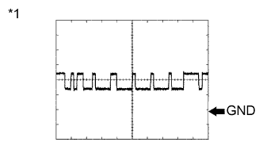

СИСТЕМА ДИФФЕРЕНЦИАЛОВ > КОНТАКТЫ ЭБУ |
| ПРОВЕРЬТЕ ЭБУ ПОЛНОГО ПРИВОДА |
Измерьте напряжение и сопротивление в соответствии со значениями, приведенными в таблице.
| Номера контактов (обозначения) | Цвет проводки | Описание контактов | Условие | Заданные условия |
| G53-9 (RLY1) - G54-4 (GND) | G - W-B | Концевой выключатель привода блокировки заднего дифференциала | Зажигание включено Концевой выключатель привода блокировки заднего дифференциала во включенном положении | Ниже 1,5 В |
| Зажигание включено Концевой выключатель привода блокировки заднего дифференциала в выключенном положении | 11 - 14 В | |||
| G53-10 (RLY2) - G54-4 (GND) | P - W-B | Концевой выключатель привода блокировки заднего дифференциала | Зажигание включено Концевой выключатель привода блокировки заднего дифференциала во включенном положении | Ниже 1,5 В |
| Зажигание включено Концевой выключатель привода блокировки заднего дифференциала в выключенном положении | 11 - 14 В | |||
| G53-3 (R) - G54-4 (GND) | R - W-B | Переключатель блокировки заднего дифференциала | Зажигание включено Переключатель блокировки заднего дифференциала во включенном положении | Ниже 1,5 В |
| Зажигание включено Переключатель блокировки заднего дифференциала в выключенном положении | 11 - 14 В | |||
| G53-15 (RLP) - G54-4 (GND) | V - W-B | Датчик блокировки заднего дифференциала | Зажигание включено датчик блокировки заднего дифференциала включен | Ниже 1,5 В |
| Зажигание включено датчик блокировки заднего дифференциала выключен | 9,5 - 14 В | |||
| G54-1 (M1) - G54-4 (GND) | B - W-B | Электродвигатель привода блокировки дифференциала | Зажигание включено Переключатель блокировки дифференциала в выключенном положении → во включенном положении (OFF (ВЫКЛ) → ON (ВКЛ) (в течение 5 с после подачи питания или вплоть до завершения переключения концевого выключателя при переходе из состояния FREE в состояние LOCK)) | 11 - 14 В |
| Зажигание включено Переключатель блокировки дифференциала в выключенном положении → во включенном положении (электродвигатель привода блокировки дифференциала остановлен) | Менее 1,5 В | |||
| G54-3 (IG) - G54-4 (GND) | R - W-B | Питание зажигания | Зажигание включено | 11 - 14 В |
| G54-4 (GND) - масса | W-B - масса | Масса | Всегда | Менее 1 Ом |
| G54-5 (M2) - G54-4 (GND) | Y - W-B | Электродвигатель привода блокировки дифференциала | Зажигание включено Переключатель блокировки дифференциала во включенном положении → в выключенном положении (ON (ВКЛ) → OFF (ВЫКЛ) (в течение 5 с после подачи питания или вплоть до завершения переключения концевого выключателя при переходе из состояния LOCK в состояние FREE)) | 11 - 14 В |
| Зажигание включено Переключатель блокировки дифференциала во включенном положении → в выключенном положении (электродвигатель привода блокировки дифференциала остановлен) | Ниже 1,5 В | |||
| G53-19 (CANH) - G54-4 (GND) | G - W-B | Линия передачи данных CAN | Зажигание включено | Формирование импульсов (см. сигнал 1) |
| G53-20 (CANL) - G54-4 (GND) | W - W-B | Линия передачи данных CAN | Зажигание включено | Формирование импульсов (см. сигнал 2) |
 |
С помощью осциллографа проверьте форму сигнала 1.
| Позиция | Описание |
| Номера контактов (обозначения) | F47-19 (CANH) - F46-4 (GND) |
| Настройки прибора | 1 В / дел., 10 мкс / дел. |
| Условие | Двигатель остановлен, замок зажигания в положении ON (ВКЛ) |
| *1 | Осциллограмма 1 |
|  |
С помощью осциллографа проверьте форму сигнала 2.
| Позиция | Описание |
| Номера контактов (обозначения) | F47-20 (CANL) - F46-4 (GND) |
| Настройки прибора | 1 В / дел., 10 мкс / дел. |
| Условие | Двигатель остановлен, замок зажигания в положении ON (ВКЛ) |
| *1 | Осциллограмма 2 |